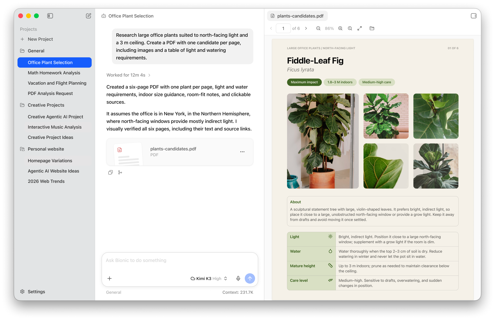
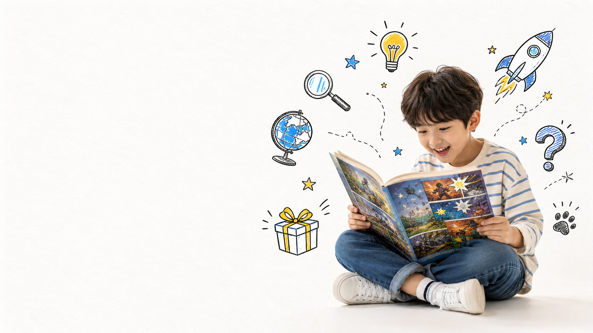

문화·브랜드
문화·브랜드260808 · 출처 29개
스탠리 텀블러 인기 비결과 기업 분석
Stanley의 인기는 보온 기술만이 아니라 Quencher의 손잡이·빨대·차량 컵홀더 적합성, 커뮤니티 재발견, 색상 드롭이 결합된 결과입니다.
단순 링크형 3개는 원문 연결 상태로 유지하고, 실내용 42개 보고서는 최신 검증·통일 양식·사진·영상/공식 데모·예시·변경 이력을 반영했습니다.
문화·브랜드Stanley의 인기는 보온 기술만이 아니라 Quencher의 손잡이·빨대·차량 컵홀더 적합성, 커뮤니티 재발견, 색상 드롭이 결합된 결과입니다.
 여행·가족
여행·가족아이 나들이·차박은 추천 순위보다 당일 운영 여부, 예약, 화장실·주차, 기상·안전 조건을 확인하는 것이 실패를 줄입니다.
 생활·건강
생활·건강ADHD는 진단 가능한 신경발달장애이고 HSP는 보통 감각처리 민감성 특성을 가리킵니다. 두 라벨을 같은 의학적 진단처럼 취급하지 않는 것이 출발점입니다.
 도서·교육
도서·교육MacBook에서 로컬 LLM을 가장 쉽게 시작하는 흐름은 LM Studio 0.4.20 설치 → 작은 모델 로딩 → RAM 여유 확인 → 문서/RAG·API 확장입니다.
 AI·자동화
AI·자동화AI 교육의 핵심은 용어 암기보다 ‘모델이 답함 → 에이전트가 도구를 씀 → Second Brain이 맥락을 남김 → 사람이 검토함’의 흐름을 이해하는 것입니다.
 도서·교육
도서·교육MacBook에서 로컬 LLM을 가장 쉽게 시작하는 흐름은 LM Studio 0.4.20 설치 → 작은 모델 로딩 → RAM 여유 확인 → 문서/RAG·API 확장입니다.

도서·교육MacBook에서 로컬 LLM을 가장 쉽게 시작하는 흐름은 LM Studio 0.4.20 설치 → 작은 모델 로딩 → RAM 여유 확인 → 문서/RAG·API 확장입니다.
 외부 가이드
외부 가이드외부 사이트로 연결되는 가이드
 여행·가족
여행·가족아이 나들이·차박은 추천 순위보다 당일 운영 여부, 예약, 화장실·주차, 기상·안전 조건을 확인하는 것이 실패를 줄입니다.
 AI·자동화
AI·자동화페르소나는 AI의 ‘정체성’을 바꾸는 마법이 아니라, 말투·관점·금지사항·출력 형식을 일관되게 만드는 프롬프트 규칙입니다.
 AI·자동화
AI·자동화VPS 운영의 장점은 24시간 실행과 통제권이지만, API 키·방화벽·업데이트·백업까지 사용자가 책임져야 합니다.
 외부 가이드
외부 가이드Hermes와 Second Brain 구성 방법을 정리한 외부 가이드 사이트 링크입니다.
 외부 가이드
외부 가이드Hermes Desktop 설치와 사용을 정리한 외부 가이드 사이트 링크입니다.
 산업·기업
산업·기업HBM은 AI 가속기 옆에서 데이터를 매우 넓은 통로로 공급하는 적층 메모리이며, 2026년은 HBM3E 중심에서 HBM4 양산이 본격 확대되는 전환기입니다.
 여행·가족
여행·가족아이 나들이·차박은 추천 순위보다 당일 운영 여부, 예약, 화장실·주차, 기상·안전 조건을 확인하는 것이 실패를 줄입니다.
 AI·자동화
AI·자동화토큰은 글자 수나 단어 수와 정확히 같지 않은, 모델이 텍스트를 처리·과금·기억하는 기본 조각입니다.
 도서·교육
도서·교육M5 Max 128GB는 ComfyUI 실험에 강하지만, 워크플로 성공은 메모리보다 지원 노드·모델 포맷·해상도·프레임 수를 맞추는 데 달려 있습니다.
 AI·자동화
AI·자동화Hermes 자동화는 콘텐츠를 대신 판단하는 시스템이 아니라, 초안·미디어 준비·예약·성과 수집을 연결하고 게시 전 사람 승인을 두는 운영 파이프라인입니다.
 도서·교육
도서·교육PASEO는 여러 에이전트를 관리하는 데 유용하지만, ‘완전 자율 오케스트레이터’보다 작업공간·하위 에이전트·터미널·스케줄을 통제하는 베타 운영 도구로 보는 편이 정확합니다.
 AI·자동화
AI·자동화PASEO는 여러 에이전트를 관리하는 데 유용하지만, ‘완전 자율 오케스트레이터’보다 작업공간·하위 에이전트·터미널·스케줄을 통제하는 베타 운영 도구로 보는 편이 정확합니다.
 AI·자동화
AI·자동화ChatGPT 구독료, Codex 사용량, API 토큰 비용은 서로 다른 과금 체계이므로 한 표에 섞지 말고 사용 시나리오별 월 총비용으로 비교해야 합니다.
 AI·자동화
AI·자동화Mac의 AI 장점은 모든 작업에서 절대 성능 우위가 아니라, 통합 메모리·MLX·전력 효율·개발 생태계가 로컬 AI 실험을 단순하게 만든다는 데 있습니다.
 도서·교육
도서·교육세 권을 한 번에 사기보다 ‘개념 1권 → 실습 1권 → 필요할 때 심화 1권’ 순서가 중복과 미완독을 줄입니다.
 산업·기업
산업·기업Palantir의 강점은 ‘AI 모델’ 자체보다 데이터를 실제 의사결정·업무 흐름에 연결하는 Ontology와 배포 방식에 있습니다. 다만 성장 기대가 매우 높아 실행 성과와 밸류에이션을 분리해서 봐야 합니다.
 AI·자동화
AI·자동화Hermes가 ‘기억하는 AI 직원’이 되려면 에이전트 기능보다 원본·요약·권한·갱신 규칙을 가진 Second Brain 운영체계가 먼저입니다.
 산업·기업
산업·기업유리기판은 장기 잠재력만 볼 단계에서 실제 공급망 협업을 추적해야 하는 단계로 이동하고 있습니다.
 제품·기술
제품·기술MiniMax H3는 텍스트·이미지·영상·오디오를 다루는 옴니모달 시스템이며, 로컬 Mac 실행 가능 범위와 클라우드 API 사용 범위를 구분해야 합니다.
 여행·가족
여행·가족상하이 디즈니 여행은 ‘고정 시간표’보다 공식 캘린더·앱을 출발 전날과 당일 아침 다시 확인하는 운영 전략이 핵심입니다.
 AI·자동화
AI·자동화학원 자동화는 ‘AI가 모두 처리’가 아니라 상담·출결·수납·보고의 반복 구간을 나누고 원문·권한·승인선을 명확히 할 때 효과가 납니다.
 AI·자동화
AI·자동화이번 사건은 ‘출시 예정 GPT가 자율 해킹했다’로 단순화하면 부정확합니다. OpenAI는 해당 모델이 공개 예정 모델이 아닌 내부 연구 프로토타입이었다고 명시했습니다.
 모빌리티
모빌리티Model Y L은 공식 3열 6인승 모델이지만, 가격·인도·주행거리 표기는 판매 국가와 인증 기준을 분리해야 합니다.
 AI·자동화
AI·자동화DeepSeek V4 Flash는 284B 총 파라미터·13B 활성 MoE와 1M 컨텍스트가 강점이지만, 실제 선택은 품질·지연·배포·데이터 정책을 함께 봐야 합니다.
 AI·자동화
AI·자동화Chat은 대화, Work는 자료 기반 작업 공간, Codex는 코드 변경 실행이라는 역할 차이를 먼저 이해해야 혼선이 줄어듭니다.
 여행·가족
여행·가족상하이 디즈니 여행은 ‘고정 시간표’보다 공식 캘린더·앱을 출발 전날과 당일 아침 다시 확인하는 운영 전략이 핵심입니다.
 도서·교육
도서·교육M5 Max 128GB의 장점은 GPU 전용 VRAM이 아니라 CPU·GPU가 함께 쓰는 128GB 통합 메모리와 최대 614GB/s 대역폭입니다.
 AI·자동화
AI·자동화Buzz는 메신저 자체가 아니라 여러 대화 채널을 AI 업무 흐름으로 연결하는 데 초점이 있으며, 2026년 8월 최신 데스크톱 릴리스는 v0.5.7입니다.
 문화·브랜드
문화·브랜드Pokémon Pokopia의 핵심 매력은 전투 중심이 아니라 Ditto가 되어 포켓몬과 함께 공간을 만들고 살아가는 생활형 경험입니다.
 AI·자동화
AI·자동화세 도구를 한 줄로 서열화하기보다, 지속형 업무·개방형 확장·코딩 실행이라는 역할 차이로 선택하는 편이 정확합니다.
 AI·자동화
AI·자동화Sol은 최고 난도, Terra는 기본 업무, Luna는 대량·저비용 처리라는 역할 구분이 가장 실용적입니다.
 AI·자동화
AI·자동화LLM Wiki는 구매하는 제품이 아니라, 원문을 보존하면서 AI가 요약·연결·갱신하는 지식 운영 패턴입니다.

도서·교육선물 성공률은 인기 순위보다 아이의 읽기 독립도·유머 취향·이미 보유한 권수를 확인할 때 높아집니다.
 모빌리티
모빌리티Model Y L은 공식 3열 6인승 모델이지만, 가격·인도·주행거리 표기는 판매 국가와 인증 기준을 분리해야 합니다.
 제품·기술
제품·기술이 비교는 ‘공식 제품 대 공식 제품’이 아닙니다. Galaxy Fold8은 확정 사양, iPhone Fold는 미발표 루머입니다.
 제품·기술
제품·기술Galaxy Z Fold8 시리즈는 더 이상 예상 제품이 아니라 2026년 8월 7일부터 판매가 시작된 공식 제품입니다.
 제품·기술
제품·기술2026년 8월 8일 현재 Apple은 폴더블 iPhone을 공식 발표하지 않았습니다. 출시 시기·화면·가격은 모두 루머로 다뤄야 합니다.